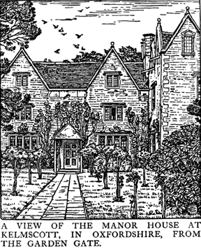
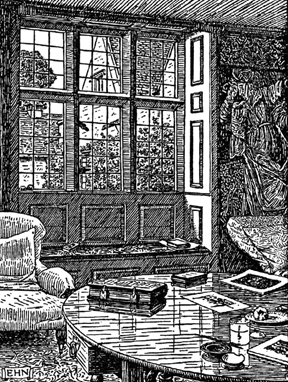

Published in THE QUEST: Number IV. November, 1895.
Originally printed at the press of
the Birmingham Guild of Handicraft, and published by
Messrs. Cornish Brothers, New Street, Birmingham,
England.
HE Village of Kelmscott lies close to the Thames on the Oxfordshire side of it, some five miles (by water) from the present end of the navigation at Inglesham, where the Colne, coming down from Fairford, Bibury and Chedworth, joins the main stream of the Thames.

Kelmscott lies on the plain of the Thames Valley, but the ground rises up from it gradually, with little interruption of the rise, till the crest of the ridge is gained which lies between Oxfordshire and Worcestershire, culminating in the Broadway Beacon some thirty miles from Kelmscott. To the N.E. of the village lies the nearly treeless piece of ground formerly Grafton Common, and beyond it is a string of pretty inland villages, or rather two strings, the westward comprising little Faringdon, Broughton Poggs and Filkins; the eastward, Langford, Broadwell, and Kencott. Of these Langford with its church partly 13th century, partly preconquest, Broadwell with its lovely 13th century tower and spire, and the curious little church of Broughton Poggs are specially interesting.
Turning south from Kelmscott one comes on the Thames, with the weir of Eaton Hastings on the foot-path from the village, but on the Berkshire side a range of heights low, but well designed, rise up from the flat meadows here, and running eastward well into a higher range on which Faringdon lies. Three miles down the river is a very pretty 15th century bridge of three arches which carries the road from Bampton to Faringdon over the Thames at Radcot. On the Eyott and the fields about here was fought a battle between the Earl of Oxford, Richard II supporter, and Bolingbroke, as the latter marched toward his thrown; and Cromwell also fought a skirmish there on his advance to the attack of Faringdon House, which was one of the stubbornest of the scattered Royalist strongholds.
To get back to Kelmscott again. The church, at the N.W. end of the village, is small but interesting; the mass of it, a nave with a tiny aisle transept and chancel, being Early English of date, though the arches of the aisle are round-headed; a feature which is imitated from Faringdon Church, and repeated at Little Faringdon, and Langford. There are remains of painting all over the church, the N. transept having been painted with figure subjects of the life of Christ in trefoil head panels. The E. window has a painted glass image of St. George (in whose honour the church is dedicated) of the time of Edward IVth. Most of the windows (which are insertions of the early 14th century) have their inner arches elegantly cusped, a characteristic feature of these Oxfordshire churches. A very beautiful pell-cot formed by two trefoil arches crowns the eastern gable of the nave, and composes pleasantly with the low pitched roofs over a clerestory, which in the 15th century took the place of the once high-pitched ones. The church is plastered almost all over the walls, as no doubt it was in the earliest days: it is fortunate in having escaped the process of stripping and pointing which so many of our village churches have undergone at the hands of the restoring wise-acres.
HEN you turn down from the church toward the Thames you come at a corner of the road on the base of the village cross probably of the 15th century), and then, turning to the left and bearing round to the right, all of which transaction takes place in about two hundred yards, you come face to face with a mass of grey walls and pearly grey roofs which makes the House, called by courtesy the Manor House, though it seems to have no manorial rights attached to it, which is the ultimate subject of this paper, and which I have held for twenty-three years. It lies at the very end of the village on a road which, brought up shortly by a back-water of the Thames, becomes a mere cart track leading into the meadows along the river.
You enter through a door in a high impointed stone wall, having passed by first a pretty, characteristic cottage with its baking oven much en evidence, and next a shed with high-pitched-roof. Entering the door in the wall you go up a flagged path through the front garden to the porch, which is a modern but harmless addition in wood. The house from this side is a lowish three storied one with mullioned windows, (in the 3rd these are in the gables) and at right angles to this another block whose bigger lower windows and pedimented gable lights indicate a later date. The house is built of well-laid rubble stone of the district, the wall of the latter part being buttered over, so to say, with thin plaster which has now weathered to the same colour as the stone of the walls; the roofs are covered with the beautiful stone slates of the district, the most lovely covering which a roof can have, especially when, as here and in all the traditional old houses of the countryside, they are `sized down'; the smaller ones to the top and the bigger toward the eaves, which gives one of the same sort of pleasure in their orderly beauty as a fishers' scales or a birds' feathers.
Turning round the house by the bigger block, one sees where the gable of the older and simpler part of the house once came out, and notes with pleasure the simple expression of the difference of levels in the 1st floor and 3rd floor, as by the diversity of windows and roofs: the back of the house shows nothing but the work of the earlier builders, and is in plan of the shape of an E with the tongue cut out, [ of the older part of the house, is copied in the later addition, and the two with their elegantly shaped gables, handsomely moulded, add much to the general beauty of the house.
Standing a little aloof from the N.E. angle of the building one can get the best idea of a fact which it is essential to note, and which is found in all these old homes here-abouts, to wit, all the walls `batter,' i.e. lean a little back. this is so invariable that it is hardly possible to suppose that it is an example of traditional design from which the builders could not escape. To my mind it is a beauty, taking from the building a rigidity which would otherwise mar it; giving it (I can think of no other word) a flexibility which is never found in our modern imitations of the houses of this age.
From this square place also one gets a good view of the farm buildings which stand to the South of the house; a very handsome barn of quite beautiful proportions, and several other sheds, including a good dove cot, all built in the same way as the house, and grouping delightfully with it.
HE garden, divided by old clipped yew hedges, is quite unaffected and very pleasant, and looks in fact as if it were a part of the house, yet at least the clothes of it: which I think ought to be the aim of the layer out of a garden. Many a good house both old and new is marred by the vulgarity and stupidity of its garden, so that one is tormented by having to abstract in one's mind the good building from the nightmare of `horticulture' which surrounds it.
Going under an arched opening in the yew hedge which makes a little garth about a low door in the middle of the north wall, one comes into a curious passage or lobby, a part of which is screened into a kind of pantry by wooden mullions which have once been glazed, and offer somewhat of a problem to the architect. The said lobby leads into what was once a great parlour (the house is not great at all remember) and is now panelled with pleasing George Ist panelling painted white: the chimney piece is no doubt of the date of the building, and is of rude but rather amusing country work; the windows in this room are large and transomed, and it as pleasant as possible; and I have many a memory of hot summer mornings passed in its coolness amidst the green reflections of the garden. Turning back, and following a little passage leading from the lobby aforesaid to the earlier part of the house, one passes by a room in the long arm of the [ almost level with the garden, with a stone chimney-piece rude enough as to its carving but well designed: and then at the end of the little passage is a delightful little room quite low ceilinged, in the place where the house is `thin in the wind,' so that there is a window east and a window west, and the whole room has a good deal the look of a particularly pleasant cabin at sea, were it not for the elms and the rooks on the west, and the green garden shrugs and the blackbirds on the east. This room is really the heart of the Kelmscott house, having been the parlor of the old house before `Mr. Thomas Turner built the house in the closes and on the tofts where once stood two ancient houses,' as an old deed has it; one of the `ancient houses,' as I am clear, being the old part of the present house, and Mr. Thomas Turner only built the grander and high block or wing.

Outside this little parlour is the entrance passage from the flagged path aforesaid, made by two stout studded partitions the carpentry of which is very agreable to anyone who does not want cabinet work to supplant carpentry. The very pleasant kitchen is on the further side of this entrance. Going back to the little passage which leads to the lobby one comes to the staircaise, of a common Elizabethan pattern with spherical knops on the standards, and so on to the first floor which has the peculiarity of being without passages, so that you have to go from one room into another, to the confusion of some of our casual visitors, to whom a bed in the close neighbourhood of a sitting room is a dire impropriety. Braving this terror, we must pass through the only north room in the house, which is in the junction of the older and the newer house and up three steps into the Tapestry, which is over the big panelled parlour. The walls of it are hung with tapestry of about 1600, representing the story of Samson; they were never great works of art, and now when all the bright colours are faded out, and nothing is left but the indigo blues, the greys and the warm yellowy browns, they look better, I think, than they were meant to look: at any rate they make the walls a very pleasant background for the living people who haunt the room; (it is our best sitting room now, though it was once the best bed-room) and, in spite of the designer, they give an air of romance to the room which nothing else would quite do.
NOTHER charm this room has, that through its south window you not only catch a glimpse of the Thames clover meadows and the pretty little elm-crowned hill over in Berkshire, but if you sit in the proper place, you can see not only the barn aforesaid with its beautiful sharp gable, the grey stone sheds, and the dove cot, but also the flank of the earlier house and its little gables and grey-scaled roofs, and this is a beautiful outlook indeed. Mr. New will, I am sure, give you a good idea of this - at least as much of it as the limits of his drawing will admit. The chimney-piece of this room is of stone, and of the date of the later work; again it is good after its rough country fashion; and in the middle of it, surrounded by a mantling by no means in-elegant, is the coat-armour of the Turners, argent, a cross ermine, four mill-rhinds sable. A mill-rhind by the way is that thing in which the spindle turns: hence the charge, which makes a piece of `canting heraldry,' as `tis called in French, armes parlantes.
Out of this best room let us pass through our present best bed room over the little parlour, and leaving a very pleasant room on the right, called the cheese-room when I first came to the house, and on the left a little room partitioned in modern times from a lobby, and which has the distinction of having its glazing almost wholly of old quarries - leaving all this we come to a newel stair-case, which comes up from the kitchen, and leads us up in the attics, i.e. the open roof under the slates, a very sturdy collar beam roof of elm often unsquared; it is most curiously divided under most of the smaller gables into little chambers where no doubt people, perhaps the hired field labourers, slept in old time: the bigger space is open, and is a fine place for children to play in, and has charming views east, west and north: but much of it is too curious for description. On one of the mullions of the older house is scored T W K 1577 Oct. 16. I believe this to be genuine, and not a relation to `Bill Stumps his mark.' K is like enough to be Kinch, a name still common hereabout. Again on a gable of the latter part is scored T B 1640 and representation in the manner of youth of either T.B., or his father, or schoolmaster; I am inclined to think the latter. T.B. I take to be one of the Bradshaws, several generations of whom are buried in Kelmscott church. These dates certainly square with probabilities, as the older part of the house looks about 1573, and the later (in this country side) looks 1630 to 1640. One thing I should have said before as to the position of the House: we are on the very confines of Oxfordshire; a slow brook or ditch saunters off to the Thames somewhat less than a furlong west from us, which is called the Town Ditch, or the County Ditch, and on the other side thereof is Gloucestershire.
ERE then are a few words about a house that I love; with a reasonable love I think: for though my words may give you no idea of any special charm about it, yet I assure you that the charm is there; so much has the old house grown up out of the soil and the lives of those that lived on it; needing no grand office-architect, with no great longing for anything else than correctness, and to be like Julius Caesar; but some thin thread of tradition, a half-anxious sense of the delight of the meadow and acre and wood and river; a certain amount (not too much let us hope) of common sense, a liking for making materials serve ones turn, and perhaps at bottom some little grain of sentiment. This I think was what went to the making of the old house; might we not manage to find some sympathy for all that from henceforward; or must we but shrink before the Philistine with one, Alas that it must perish!
William Morris.
Kelmscott, October 25, 1895.
 Return
to Founders of the Arts & Crafts Movement Page
Return
to Founders of the Arts & Crafts Movement Page